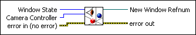
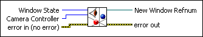

Setup Window VI
Owning Palette: Helpers VIs
Requires: Full Development System
Creates a new window with hardware acceleration for rendering the 3D scene.

 Add to the block diagram Add to the block diagram |
 Find on the palette Find on the palette |
Owning Palette: Helpers VIs
Requires: Full Development System
Creates a new window with hardware acceleration for rendering the 3D scene.

| Add to the block diagram |
Find on the palette |
 |
Window State specifies the state of the new window.
|
||||||||
|
Camera Controller sets the interaction of the camera with the 3D scene.
|
||||||||
 |
error in describes error conditions that occur before this node runs. This input provides standard error in functionality. | ||||||||
 |
New Window Refnum is the reference to the window. | ||||||||
 |
error out contains error information. This output provides standard error out functionality. |
Refer to the 3D Model of Solar System VI in the labview\examples\Graphics and Sound\3D Picture Control directory for an example of using the Setup Window VI.
 Open example Find related examples
Open example Find related examples